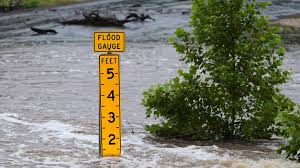
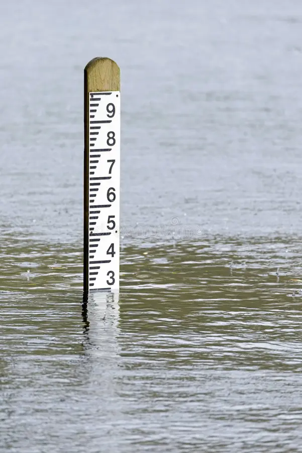
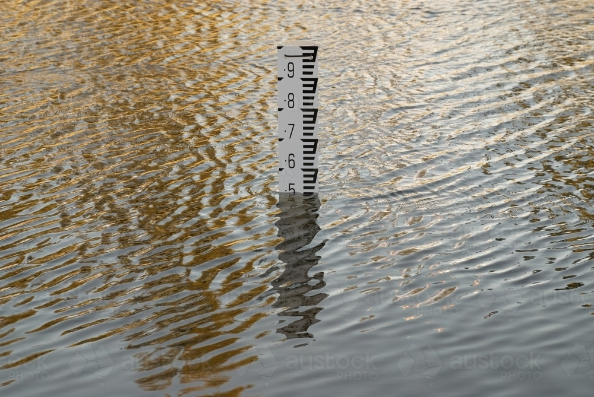
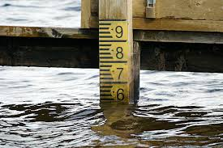

Flood Information System
Your guide to flood safety
Flood Stages & Meaning
Stage 1: Safe

Water Level:
0% - 85%
Meaning
The river and weather conditions are normal. Water levels are low, and there is no immediate risk of flooding.
Water Level Meaning
Water level is below 85% of the capacity of river, meaning there is plenty of room for rainfall and runoff. No flooding concerns at this stage.
Common Signs
- Clear skies or light clouds
- Stable river levels
- No rain forecasted for the area
What NOT to Do
- Do not ignore basic safety preparation
- Do not spread false rumors about flooding
If You Have Pets or Animals
- Keep pets indoors as usual
- Ensure they have fresh water and food
How Long This Stage Usually Lasts
This stage can last for weeks or months depending on the season and rainfall patterns.
Common Mistakes People Make
- Becoming careless and ignoring weather updates
- Not preparing any emergency kits
- What You Should Do
- Stay aware of local weather forecasts
- Keep drains and surroundings clean
- Prepare a basic emergency kit with essentials
Stage 2: Pre-Alert

Water Level:
86% - 95%
Meaning
Heavy rain is expected, or the river level is rising slowly. Flooding is not occurring yet but is possible soon.
Water Level Explanation:
At this stage, the river level is between 86% and 95% of maximum safe capacity. This indicates that heavy rain or snowmelt may cause further increases soon.
Common Signs
- Increasing cloud cover and rainfall
- Rising river or canal water levels
- Weather warnings issued by authorities
What NOT to Do
- Do not panic or spread unverified information
- Do not enter riverbanks or low-lying areas
If You Have Pets or Animals
- Prepare a safe place for pets higher off the ground
- Gather pet supplies and carriers ready
How Long This Stage Usually Lasts
Usually lasts from a few hours to a few days depending on rainfall.
Common Mistakes People Make
- Ignoring weather alerts
- Delaying preparation of emergency supplies
What You Should Do
- Charge your mobile phones and power banks
- Prepare your emergency bag with important documents, medicine, and food
- Avoid going near rivers and canals
Stage 3: Alert

Water Level:
96% - 99%
Meaning
Water levels are rising more quickly. Some low-lying areas may begin to experience minor flooding.
Water Level Explanation
Water level is near full capacity (96% to 99%), signaling that the river is almost at the point where it could overflow its banks.
Common Signs
- Noticeable increase in river water level
- Water pooling in some areas near the riverbanks
- Local authorities issue flood alerts
What NOT to Do
- Do not attempt to cross flooded roads or streams
- Do not leave children unattended near water
If You Have Pets or Animals
- Move pets to safe, higher areas inside the home
- Keep animals calm and secure
How Long This Stage Usually Lasts
Can last hours to a day depending on the weather intensity.
Common Mistakes People Make
- Underestimating the speed and danger of rising water
- Ignoring evacuation warnings
What You Should Do
- Move valuables and important items to higher places
- Stay indoors and keep family members safe
- Keep emergency contacts handy
- Stay informed via radio or mobile alerts
Stage 4: Danger

Water Level:
100% - 110%
Meaning
Floodwaters are entering low-lying areas. Riverbanks may overflow, putting homes and roads at risk.
Water Level Explanation
100% represents the maximum safe capacity (flood stage) of river. Levels above 100% (up to 110%) mean the river is overflowing,
and flooding is occurring or imminent.
Common Signs
- Water visible on streets and in neighborhoods
- Overflowing riverbanks and canals
- Evacuation orders from local authorities
What NOT to Do
- Do not drive or walk through flooded water
- Do not stay in structurally unsafe buildings
If You Have Pets or Animals
- Evacuate with pets if possible
- If not, secure them in elevated safe spots with access to food and water
How Long This Stage Usually Lasts
This can last from several hours to days, depending on rainfall and river flow.
Common Mistakes People Make
- Delaying evacuation
- Ignoring safety instructions
- Attempting risky rescues without help
What You Should Do
- Evacuate immediately if instructed
- Take your emergency bag and move to safer, higher ground
- Assist children, elderly, and neighbors
- Avoid contact with floodwater as it may be contaminated
Stage 5: Emergency

Water Level:
Above 110%
Meaning
Severe flooding is occurring. Water levels exceed safety limits, and there is imminent danger to life and property.
Water Level Explanation
When water level exceeds 110%, it means the river is dangerously overflowing, with widespread flooding and urgent evacuation needed.
Common Signs
- Rapidly rising water
- Flooding inside homes and buildings
- Emergency services actively evacuating areas
What NOT to Do
- Do not stay in damaged or weak buildings
- Do not return to flooded areas until declared safe
- Avoid any unnecessary movement in flood zones
If You Have Pets or Animals
- Take pets to official shelters if allowed
- Keep them close and calm during evacuation
How Long This Stage Usually Lasts
Can last several days to weeks depending on recovery efforts and weather.
Common Mistakes People Make
- Staying behind in dangerous areas
- Ignoring official evacuation notices
- Taking unnecessary risks during rescue
What You Should Do
- Evacuate immediately and follow official instructions
- Move to official shelters or designated safe areas
- Carry only essential items and keep family together
- Stay updated on rescue operations and relief efforts
Important Reminder
Understanding flood stages can help you prepare early and protect your family. Even small safety steps taken at the right time can save lives.
More Information